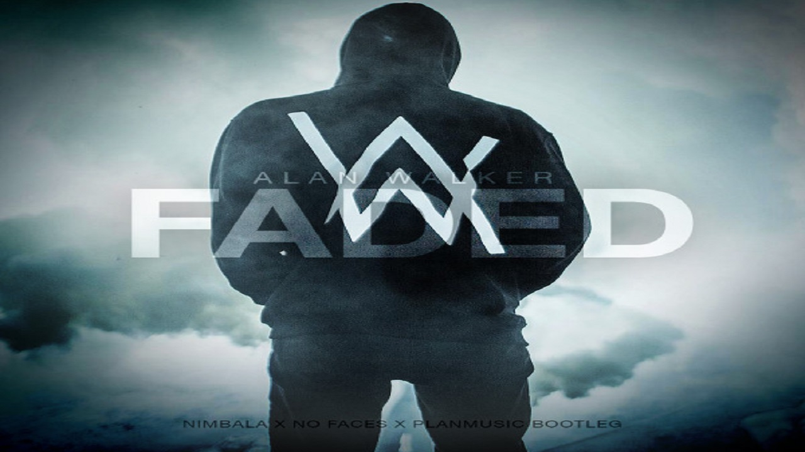
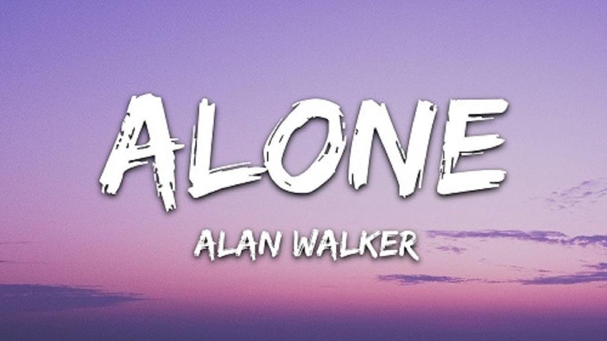

Alan Walker, Norveçli bir DJ ve plak yapımcısıdır. En çok, 2015 yılında yayınladığı "Faded" adlı single'ı ile on farklı ülkede platin sertifikaları alan başarısıyla tanınmaktadır. Diğer popüler şarkıları arasında "Alone", "Sing Me to Sleep" ve "The Spectre" bulunur.
Listen Now
Yayınlanma Tarihi: 2015
Yayınlanma Tarihi: 2016
Yayınlanma Tarihi: 2016